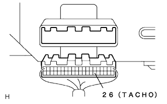
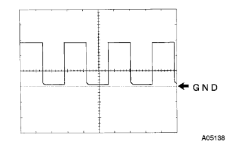

Meter & gauge system tachometer operation failure |
| Step 1 | Tascan Data Read (engine control compilationa) |
Use the SST to perform the operation according to the screen display, display the [ECU Data Monitor] screen and check the computer data.
| Item name | symbol | Items name explanation | Inspection condition | Reference value |
|---|---|---|---|---|
| Engine speed | ESPD | Engine speed |
|
|
|
| ||||
| OK | |
| Step 2 | Combination meter Assy inspection (input waveform) |
Preparation before inspection
Cut the connector of the combination sijon meter asser Assembly.
Confirm that the connector of the engine controlled compilation is connected.
Waveform inspection
|   |
Using an oscilloscope, check the waveform between the combination of the combination sijon meter ASSY Wire harness side connector 26 (tacho) terminal ← → the waveform between the body ground.
| item | Content |
|---|---|
| Measuring terminal | 26 (Tacho) ← → Body Earth |
| Instrument set | 5V/Div, 10ms/Div |
| Measurement conditions | At the time of idle rotation |
|
| ||||
| NG | |
| Step 3 | Wire harness and connector inspection (combination synchron meter ASSY-engine control compilation) |
Preparation before inspection
Confirm that the connector of the combination sijon meter assessy is separated.
Cut the engine controlled compilation cone.
Conduction inspection
Use SST (Toyota Electrical Tester) to inspect the conduction of the wire harness between the 26 (Tacho) terminals of the combination sijon meter asser Assemer ← → the engine control compilation.
| Tester connection [Combinishon meter Assemor ← → Engine Control Composer] | item | conditions | standard |
|---|---|---|---|
| 26 (Tacho) ← → D5 (Tacho) | Conduction | Always | There is an conductor |
|
| ||||
| OK | ||
| ||